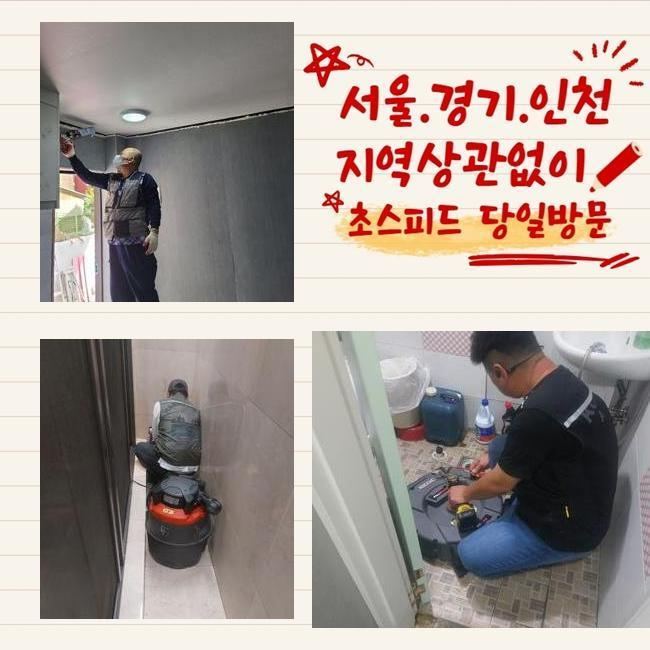
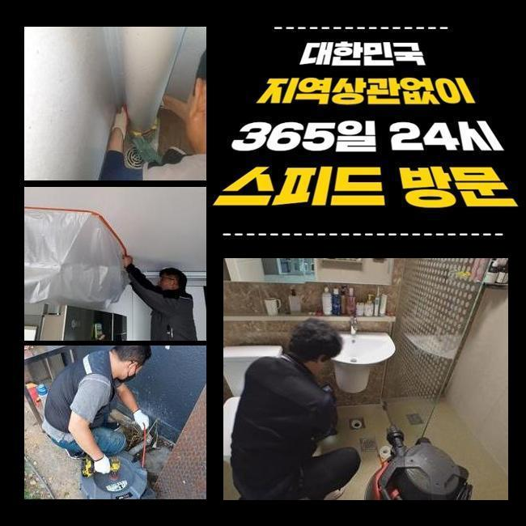
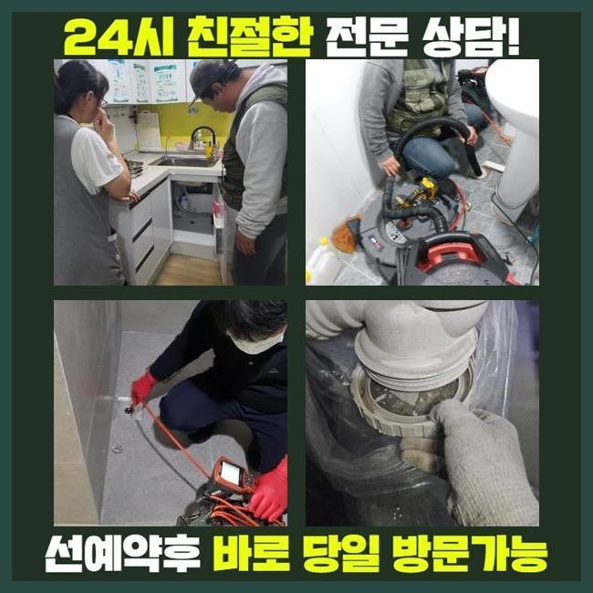
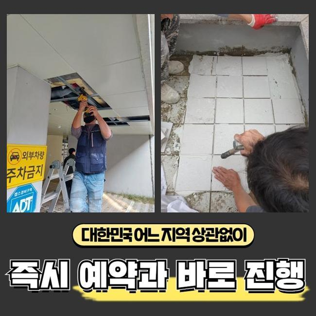
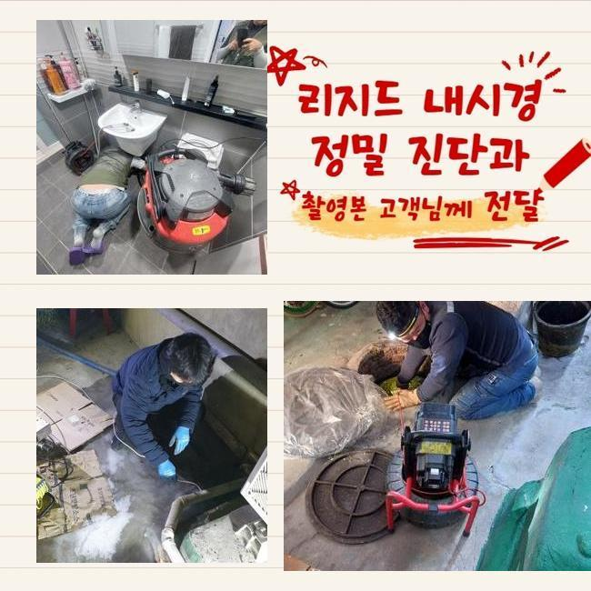
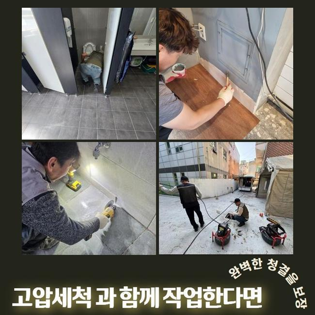

🏠 부천 소사동변기배관막힘 상동 하수구뚫는업체 배관공사
용인 변기막힘 전문 시공 후기

📋 작업 개요
- 위치: 용인
- 서비스 유형: 변기막힘, 하수구막힘, 배관막힘, 누수수리, 역류해결, 뚫는업체, 고압세척, 설비공사, 악취차단
- 작업 일시: 2025. 3. 25. 15:48
- 업체명: 하수구수사대 (010-5615-2118)
🔍 문제 상황
부천 소사동변기배관막힘 상동 하수구뚫는업체 배관공사
하수구 중단이 생기는 문제점들은 다수지만 흘러내려간 기름기와 석회물질이 주된 원인이라 말씀 드릴 수 있습니다
내부리모델링을 하고 하수의 중단이나 역행이 일어나면 시멘트 혹은 석조 등을 원인으로 예상을 하는 방향이 유력할 수 있습니다
향후 소개할 현장도 작업을 하면서 다수의 오물들을 배관 내에서 제거하게 되었습니다
가정집에서 하수구막힘이 생기고 오래 방치되면 가까운 세대로의 전이가 발생할 수 있으니 빠르게 근본원인을 빼내야 합니다
엎친데 덮친격으로 상가건물일 때는 금전적인 부분과 이어진 커다란 골칫거리이므로 더욱 체계적이고 빠른 조치를 취해야 합니다
오늘 찾은 곳은 얼마전 실시된 인테리어 공사 이후 하수관이 정상작동하지 않아서 고충이 어마어마하셨다고 말씀주셨어요
보통 인테리어를 한 다음에 남은 분진이나 조각을 말끔하게 정돈하지 않거나 그냥 물로 씻어 없앤다면 방해물이 될 수 있습니다
그러나 여러 원인으로 배관이 고장나기도 하므로 가볍게 보지 않고 뚫는 장비를 챙겨서 하수문제가 있는 건물로 향했습니다
안쪽으로 들어서서 현장을 스캔해봤더니 수전이 연결된 배수구의 장애가 발생한 것 같더라고요
석션 장치로 근처의 오물들을 없애주고 내부에 차오른 하수 끌어당겨주기로 했습니다
물뿐만이 아니라서 석션 장비만으로는 전적인 처리가 힘들었지만 내부 관측을 위해서 차오른 하수를 걷어내주어야 한다고 판단했습니다

🔎 원인 분석
💡 전문가 진단: 정밀 진단 장비를 사용하여 슬러지의 고착 여부를 판명하고 타격/세척 작업을 실시했습니다.
하수구를 뚫어내기 위해서는 수작업뿐 아니라 장비의 힘이 무엇보다 중요합니다
빨아당기는 작업을 하는 석션장비와 갈아내는 샤프트는 필수이며 배관 안을 확실하게 체크하려면 내시경도 작동시켜야 하는 부분입니다
중앙배관에 속하거나 옥외배관과 이어져있다면 강력한 파워를 지닌 고압세척기까지 추가할 수 있어서 항상 가져다니고 있습니다
요즘은 수작업뿐 아니라 장비의 힘이 진보를 거듭하고 있어서 하수구 뚫음 작업이 시간적으로 단축됩니다
그러나 보다 프로페셔널한 기술력이 미흡하면 장치의 제 기능을 작동시키는 게 곤란할 것입니다
현황을 완전히 분석하지 않고 장치를 막 넣어버리면 하수관의 심한 고장까지 도래할 수 있다보니 하수구를 보는 카메라로 관로 안을 직접 체크하고 뚫어내는 기기를 통한 작업을 착수하는 게 바람직합니다
내부에 찰랑대던 물을 제거하고 배관 내시경을 깊은 배수구 안으로 들여보내서 상황 분석을 해보았습니다
예측한 바와 같이 흙먼지라거나 건축자재의 잔여물들이 터를 잡고 있는 바람에 정상적인 물의 이동성을 저해한다는 걸 인식할 수 있었어요
내부 타일공사나 인테리어 등의 시공을 했다면 관로로 오물이 들어가지 않게끔 작업하면서도 신경써서 정돈작업을 해주는 게 필요합니다
심층부에 이르러서 하얀 물질이 감지됐는데 시공의 중간과 끝 부분에서 시멘트분진이 들어간 후 물과 만나서 경화가 된 것으로 추측해 볼 수 있었습니다
처리가 되지 않은 일부의 백시멘트가 유입된 듯 했어요
약간의 틈만 보이는 내부였기에 막혀버린 현장이었습니다

🔧 작업 과정
촬영장비로 관로 안을 봐주면서 분쇄를 신중하게 해드렸습니다
샤프트로 오물들과 슬러지를 작은 조각으로 나눠서 꺼내보려고 시도했습니다
분산된 덩어리를 석션을 돌려서 끌어올렸더니 제법 큰 뭉치가 튀어올라왔어요
오랫동안 작업을 해주었지만 시멘트가 접착력이 높게 붙어버려서 배관을 갈아끼우는 대공사까지 해야할지 모르는 사태로 작업 중에 절감했습니다
플렉스샤프트만 적용해서는 속 시원한 해소가 안 될 듯 하여 계속 무리하게 절차가 계속되면 오염된 관로가 구멍나거나 찢어질 것 같았습니다
굴착을 진행한 다음에 육안으로 관로를 보고서 계획을 짜보기로 했습니다
미리 양해를 구한다고 전해드리고 굴착을 시작했어요
카메라로 보았 듯 시멘트 덩어리가 가득 차올라서 관로가 차단된 게 맞더라고요
인테리어 업무를 하면서 흘러가버린 분진이 쌓이고 쌓여 문제가 된 겁니다
시멘트 가루들은 쉽게 굳어버려서 관로가 차단이 되는 현상들이 현장을 다녀보면 쉽게 감지되는 사안입니다
문제되는 쪽을 정상적인 새 배관으로 연결지어줬어요
배관을 바꿔줄 때도 허술하지 않고 깔끔하게 분해해주는 것이 중요하고 연결부에도 틈이 조성되지 않도록 접합시킵니다
연결부위를 말끔히 끝마치지 않는다면 붙은 면이 갈라진다거나 사이가 멀어지다가 누수로 사태가 커질 수 있습니다
파이프가 고정되지 않는다거나 분해되지 않도록 신경 써서 작업을 해드리게 됐습니다
갈아내준 찌꺼기 입자들이 엄청난 양이 나왔습니다
이정도로 많은 침전물이 관로를 메우고 있었으니 배수가 힘들어진 것입니다
이제는 기능이 나아졌는지 보려고 하수구 속으로 물동이를 인위적으로 붓는 방식으로 배수 기능 검사에 들어갑니다
더러운 물의 역류같은 기능장애가 다 사라진 것까지 확인하고서 미장 업무에 만전을 기했습니다
시멘트 회반죽을 충분하게 밀어넣어 배관 자리를 잡고 그 다음은 평평하고 보강을 해드립니다


✅ 작업 완료
물샘을 차단할 수 있는 방수층을 조성해주고 철거해줬던 타일 마감재를 틀림없이 부착합니다
굴착 작업으로 하수도를 정비하고나서 미장을 해준 바닥을 방수 시공을 하지 않으면 아래 이웃에게도 물기가 영향을 미칠 수 있으니 꼼꼼하게 시공 마무리를 처리해드려야 합니다
견고하게 양생되기까지 내일까지는 공간 사용을 자제할 것을 당부드린 후에 막힘 역류가 동시에 생겼던 하수구 개선을 완성하게 됐습니다
하수구막힘의 양상은 다양한데 이번처럼 욕실 쪽 하수 장애도 취약한 곳 중 하나라서 의뢰를 여러차례 받아왔습니다
시간 관계없이 출장을 가므로 접수를 해주시면 차단되어 미진한 하수구 통수를 싹 뚫어드릴게요!




⚠️ 베란다 누수 및 방수 관리 방법
- ✅ 비가 많이 올 때 창틀 주변이나 아래층 천장에 얼룩이 생기는지 정기적으로 확인해 보세요.
- ✅ 우수관 주변 실리콘 마감이 들뜨거나 깨진 틈새가 있는지 손상 여부를 수시로 체크하세요.
- ✅ 베란다 바닥 타일의 줄눈(메지)이 소실되면 그 틈으로 물이 침투하여 누수가 유발됩니다.
- ✅ 누수 의심 증상 발견 시 방치하면 아래층 손실이 커지므로 즉시 전문가의 진단을 받으십시오.
💡 핵심 정리
- 확실한 장비 작업(내시경 점검 및 샤프트 스케일링)으로 원인을 뿌리 뽑습니다.
- 작업 후 1년 이내에 동일한 부위 재발 시 100% 무상 A/S 서비스를 보장합니다.
- 서울 · 경기 · 인천 전 지역에 24시간 언제든 긴급 출동할 수 있도록 항시 대기 중입니다.
❓ 자주 묻는 질문 (FAQ)
🚨 용인 변기막힘 문제로 고민이신가요?
정확한 원인 진단과 확실한 시공으로 재발 없는 해결을 약속드립니다.
24시간 긴급 출동 | 서울 · 경기 · 인천 전지역 | 1년 내 재발 시 무상 A/S